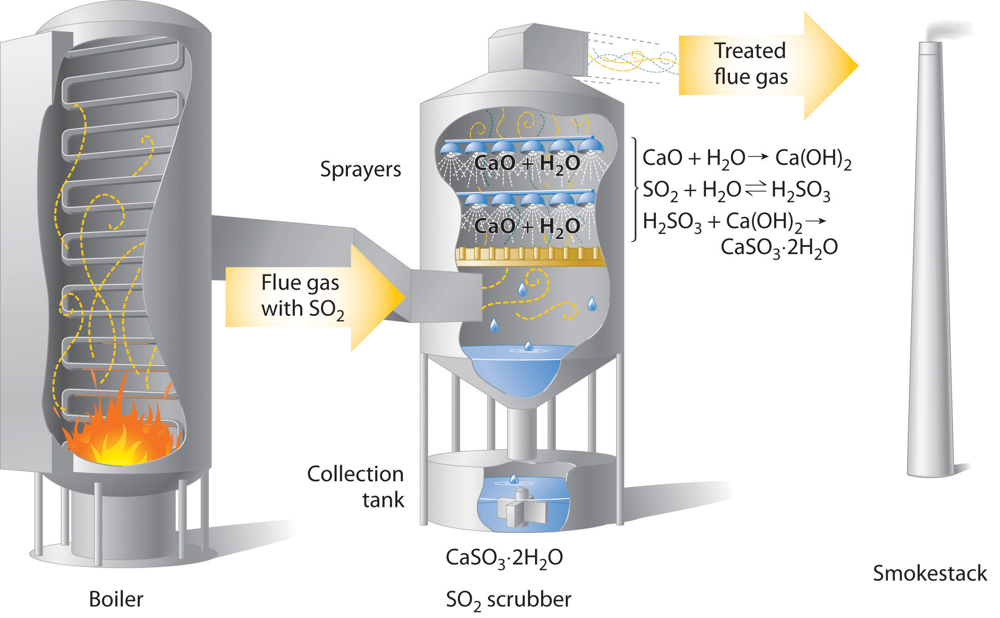
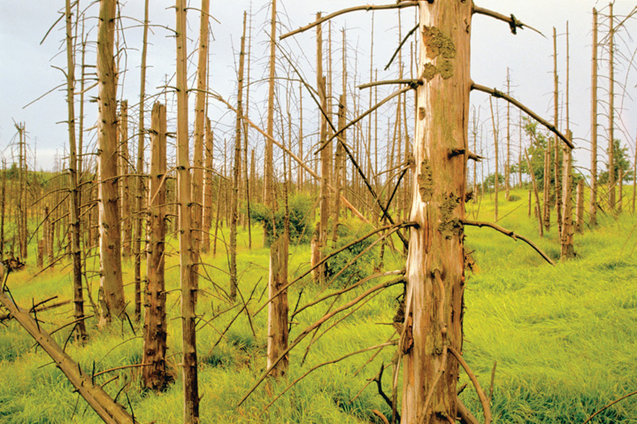

Acid–base reactions can have a strong environmental impact. For example, a dramatic increase in the acidity of rain and snow over the past 150 years is dissolving marble and limestone surfaces, accelerating the corrosion of metal objects, and decreasing the pH of natural waters. This environmental problem is called acid rainPrecipitation that is dramatically more acidic because of human activities. and has significant consequences for all living organisms. To understand acid rain requires an understanding of acid–base reactions in aqueous solution.
The term acid rain is actually somewhat misleading because even pure rainwater collected in areas remote from civilization is slightly acidic (pH ≈ 5.6) due to dissolved carbon dioxide, which reacts with water to give carbonic acid, a weak acid:
Equation 4.44
CO2(g) + H2O(l) ⇌ H2CO3(aq) ⇌ H+(aq) + HCO3−(aq)The English chemist Robert Angus Smith is generally credited with coining the phrase acid rain in 1872 to describe the increased acidity of the rain in British industrial centers (such as Manchester), which was apparently caused by the unbridled excesses of the early Industrial Revolution, although the connection was not yet understood. At that time, there was no good way to measure hydrogen ion concentrations, so it is difficult to know the actual pH of the rain observed by Smith. Typical pH values for rain in the continental United States now range from 4 to 4.5, with values as low as 2.0 reported for areas such as Los Angeles. Recall from Figure 4.15 "A Plot of pH versus [H" that rain with a pH of 2 is comparable in acidity to lemon juice, and even “normal” rain is now as acidic as tomato juice or black coffee.
What is the source of the increased acidity in rain and snow? Chemical analysis shows the presence of large quantities of sulfate (SO42−) and nitrate (NO3−) ions, and a wide variety of evidence indicates that a significant fraction of these species come from nitrogen and sulfur oxides produced during the combustion of fossil fuels. At the high temperatures found in both internal combustion engines and lightning discharges, molecular nitrogen and molecular oxygen react to give nitric oxide:
Equation 4.45
N2(g) + O2(g) → 2NO(g)Nitric oxide then reacts rapidly with excess oxygen to give nitrogen dioxide, the compound responsible for the brown color of smog:
Equation 4.46
2NO(g) + O2(g) → 2NO2(g)When nitrogen dioxide dissolves in water, it forms a 1:1 mixture of nitrous acid and nitric acid:
Equation 4.47
2NO2(g) + H2O(l) → HNO2(aq) + HNO3(aq)Because molecular oxygen eventually oxidizes nitrous acid to nitric acid, the overall reaction is
Equation 4.48
2N2(g) + 5O2(g) + 2H2O(l) → 4HNO3(aq)Large amounts of sulfur dioxide have always been released into the atmosphere by natural sources, such as volcanoes, forest fires, and the microbial decay of organic materials, but for most of Earth’s recorded history the natural cycling of sulfur from the atmosphere into oceans and rocks kept the acidity of rain and snow in check. Unfortunately, the burning of fossil fuels seems to have tipped the balance. Many coals contain as much as 5%–6% pyrite (FeS2) by mass, and fuel oils typically contain at least 0.5% sulfur by mass. Since the mid-19th century, these fuels have been burned on a huge scale to supply the energy needs of our modern industrial society, releasing tens of millions of tons of additional SO2 into the atmosphere annually. In addition, roasting sulfide ores to obtain metals such as zinc and copper produces large amounts of SO2 via reactions such as
Equation 4.49
2ZnS(s) + 3O2(g) → 2ZnO(s) + 2SO2(g)Regardless of the source, the SO2 dissolves in rainwater to give sulfurous acid (Equation 4.50), which is eventually oxidized by oxygen to sulfuric acid (Equation 4.51):
Equation 4.50
SO2(g) + H2O(l) → H2SO3(aq)Equation 4.51
2H2SO3(aq) + O2(g) → 2H2SO4(aq)Concerns about the harmful effects of acid rain have led to strong pressure on industry to minimize the release of SO2 and NO. For example, coal-burning power plants now use SO2 “scrubbers,” which trap SO2 by its reaction with lime (CaO) to produce calcium sulfite dihydrate (CaSO3·2H2O; Figure 4.17 "Schematic Diagram of a Wet Scrubber System").
Figure 4.17 Schematic Diagram of a Wet Scrubber System
In coal-burning power plants, SO2 can be removed (“scrubbed”) from exhaust gases by its reaction with a lime (CaO) and water spray to produce calcium sulfite dihydrate (CaSO3·2H2O). Removing SO2 from the gases prevents its conversion to SO3 and subsequent reaction with rainwater (acid rain). Scrubbing systems are now commonly used to minimize the environmental effects of large-scale fossil fuel combustion.
The damage that acid rain does to limestone and marble buildings and sculptures is due to a classic acid–base reaction. Marble and limestone both consist of calcium carbonate (CaCO3), a salt derived from the weak acid H2CO3. As we saw in Section 4.6 "Acid–Base Reactions", the reaction of a strong acid with a salt of a weak acid goes to completion. Thus we can write the reaction of limestone or marble with dilute sulfuric acid as follows:
Equation 4.52
CaCO3(s) + H2SO4(aq) → CaSO4(s) + H2O(l) + CO2(g)Because CaSO4 is sparingly soluble in water, the net result of this reaction is to dissolve the marble or limestone. The Lincoln Memorial in Washington, DC, which was built in 1922, already shows significant damage from acid rain, and many older objects are exhibiting even greater damage (Figure 4.18 "Acid Rain Damage to a Statue of George Washington"). Metal objects can also suffer damage from acid rain through oxidation–reduction reactions, which are discussed in Section 4.8 "Oxidation–Reduction Reactions in Solution".
Figure 4.18 Acid Rain Damage to a Statue of George Washington
Both marble and limestone consist of CaCO3, which reacts with acid rain in an acid–base reaction to produce CaSO4. Because CaSO4 is somewhat soluble in water, significant damage to the structure can result.
The biological effects of acid rain are more complex. As indicated in Figure 4.15 "A Plot of pH versus [H", biological fluids, such as blood, have a pH of 7–8. Organisms such as fish can maintain their internal pH in water that has a pH in the range of 6.5–8.5. If the external pH is too low, however, many aquatic organisms can no longer maintain their internal pH, so they die. A pH of 4 or lower is fatal for virtually all fish, most invertebrate animals, and many microorganisms. As a result of acid rain, the pH of some lakes in Europe and the United States has dropped below 4. Recent surveys suggest that up to 6% of the lakes in the Adirondack Mountains of upstate New York and 4% of the lakes in Sweden and Norway are essentially dead and contain no fish. Neither location contains large concentrations of industry, but New York lies downwind of the industrial Midwest, and Scandinavia is downwind of the most industrialized regions of western Europe. Both regions appear to have borne the brunt of the pollution produced by their upwind neighbors. One possible way to counter the effects of acid rain in isolated lakes is by adding large quantities of finely ground limestone, which neutralizes the acid via the reaction shown in Equation 4.52 (see Section 4.1 "Aqueous Solutions"1, Problem 15).
A second major way in which acid rain can cause biological damage is less direct. Trees and many other plants are sensitive to the presence of aluminum and other metals in groundwater. Under normal circumstances, aluminum hydroxide [Al(OH)3], which is present in some soils, is insoluble. At lower pH values, however, Al(OH)3 dissolves via the following reaction:
Equation 4.53
Al(OH)3(s) + 3H+(aq) → Al3+(aq) + 3H2O(l)The result is increased levels of Al3+ ions in groundwater. Because the Al3+ ion is toxic to plants, high concentrations can affect plant growth. Acid rain can also weaken the leaves and roots of plants so much that the plants are unable to withstand other stresses. The combination of the two effects can cause significant damage to established forests, such as the Black Forest in Germany and the forests of the northeastern United States and Canada and other countries (Figure 4.19 "Acid Rain Damage to a Forest in the Czech Republic").
Figure 4.19 Acid Rain Damage to a Forest in the Czech Republic
Trees and many other plants are sensitive to aluminum and other metals in groundwater. Acid rain increases the concentration of Al3+ in groundwater, thereby adversely affecting plant growth. Large sections of established forests have been severely damaged.
Acid rain is rainfall whose pH is less than 5.6, the value typically observed, due to the presence of dissolved carbon dioxide. Acid rain is caused by nitrogen oxides and sulfur dioxide produced by both natural processes and the combustion of fossil fuels. Eventually, these oxides react with oxygen and water to give nitric acid and sulfuric acid.
Why is it recommended that marble countertops not be used in kitchens? Marble is composed mostly of CaCO3.
Explain why desulfurization of fossil fuels is an area of intense research.
What is the role of NOx in the formation of acid rain?